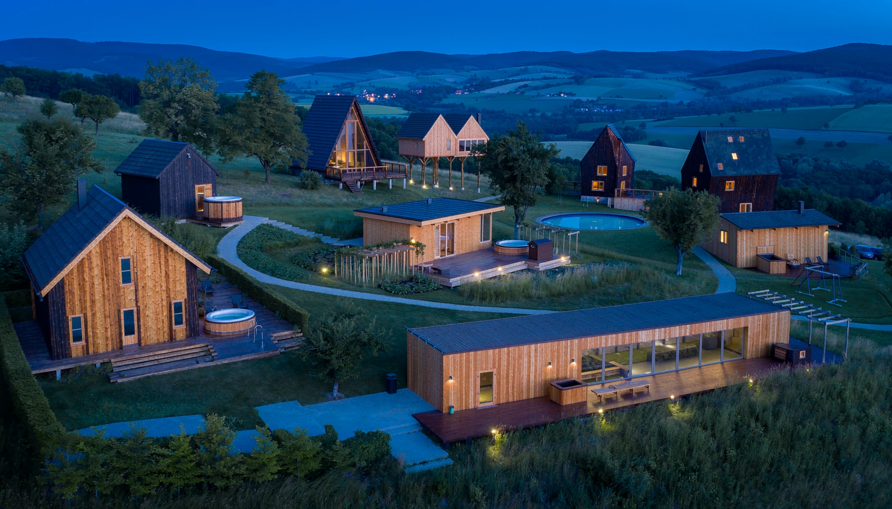
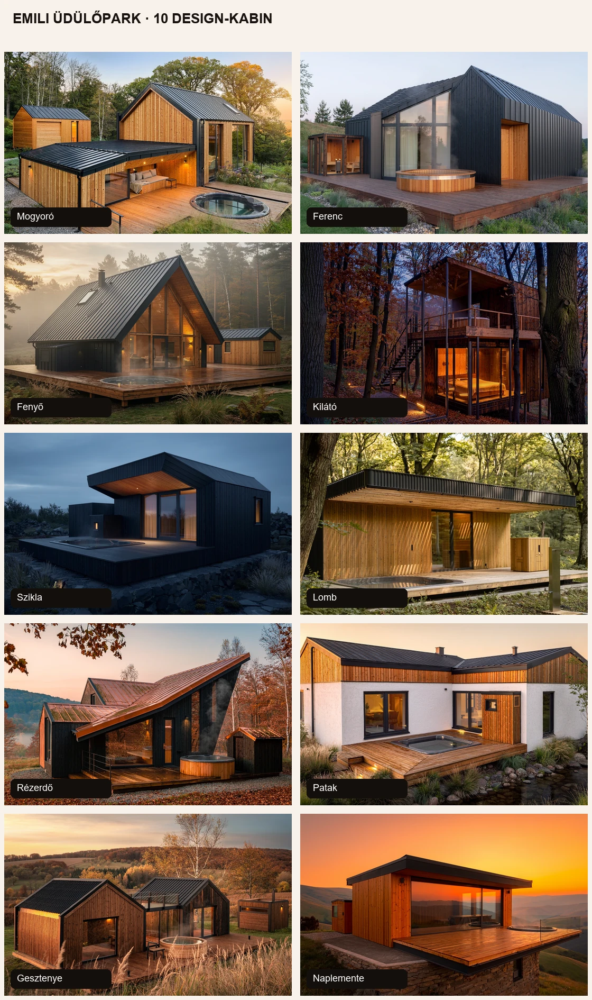
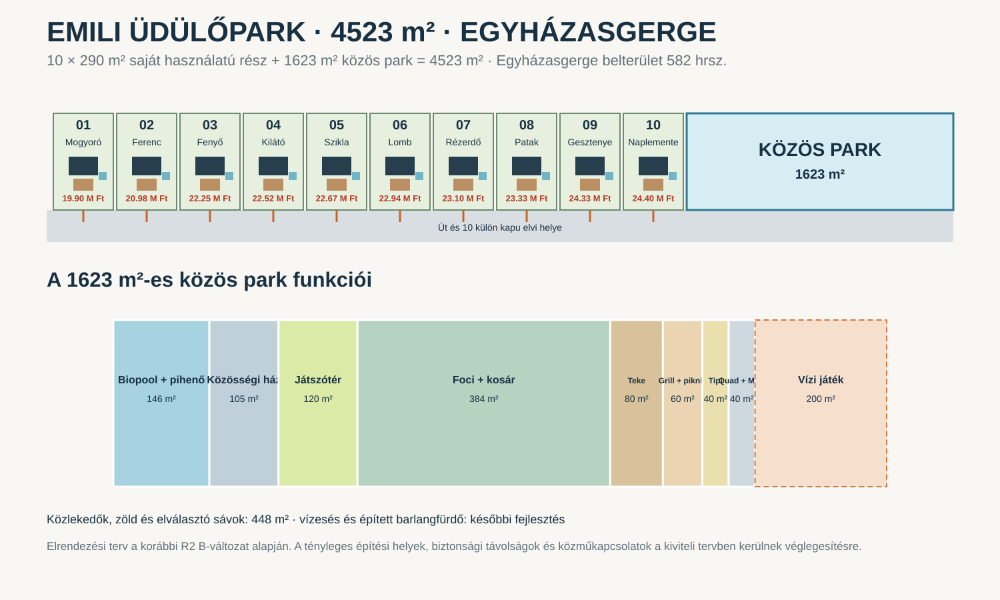
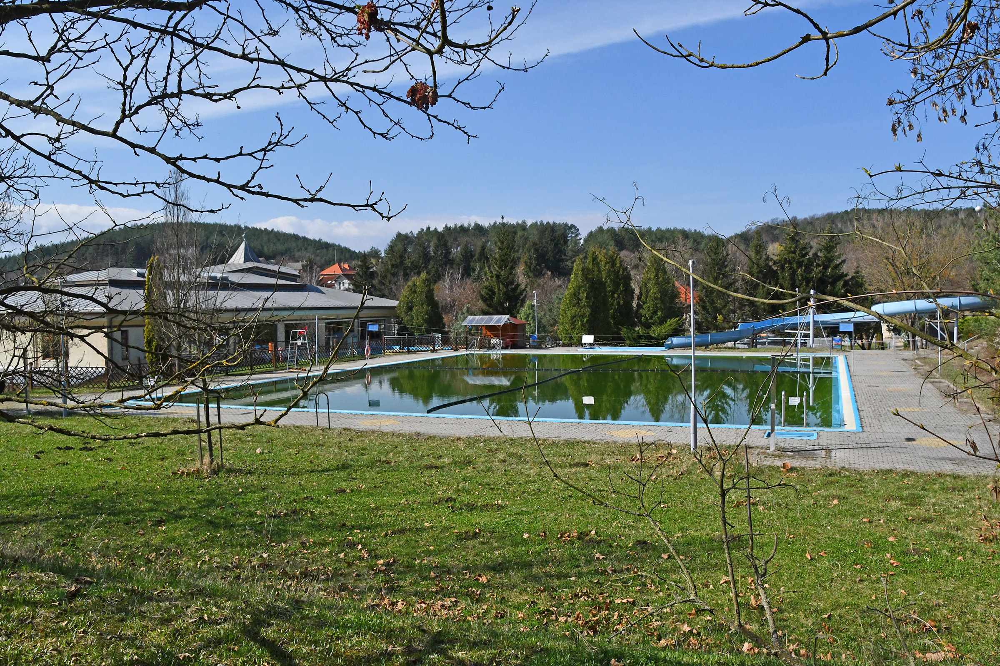
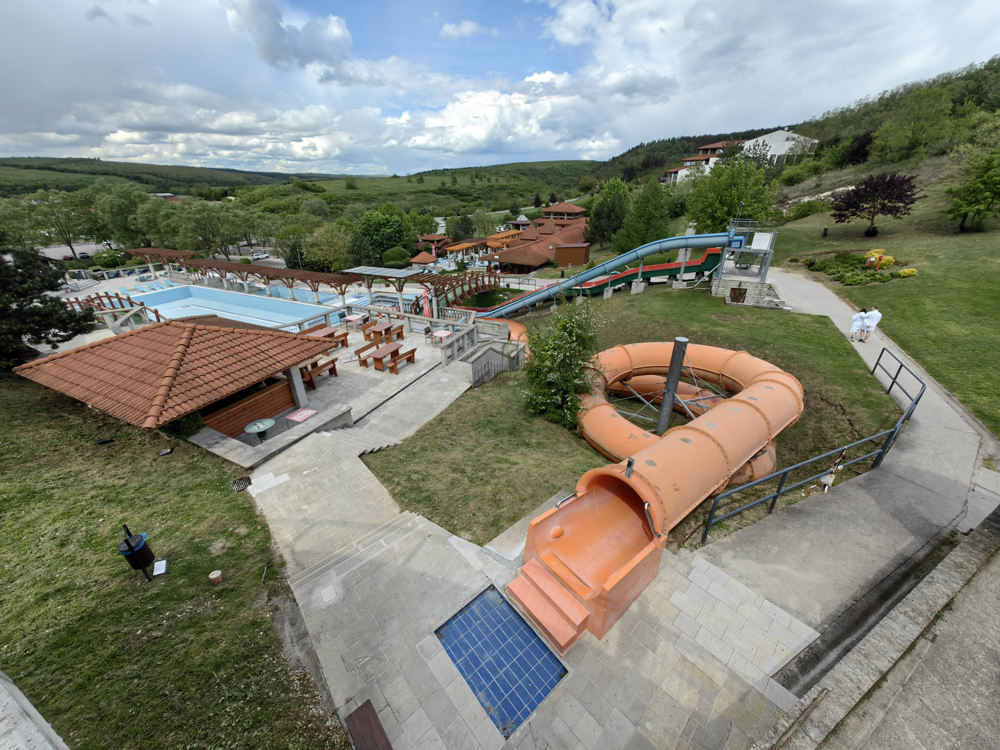
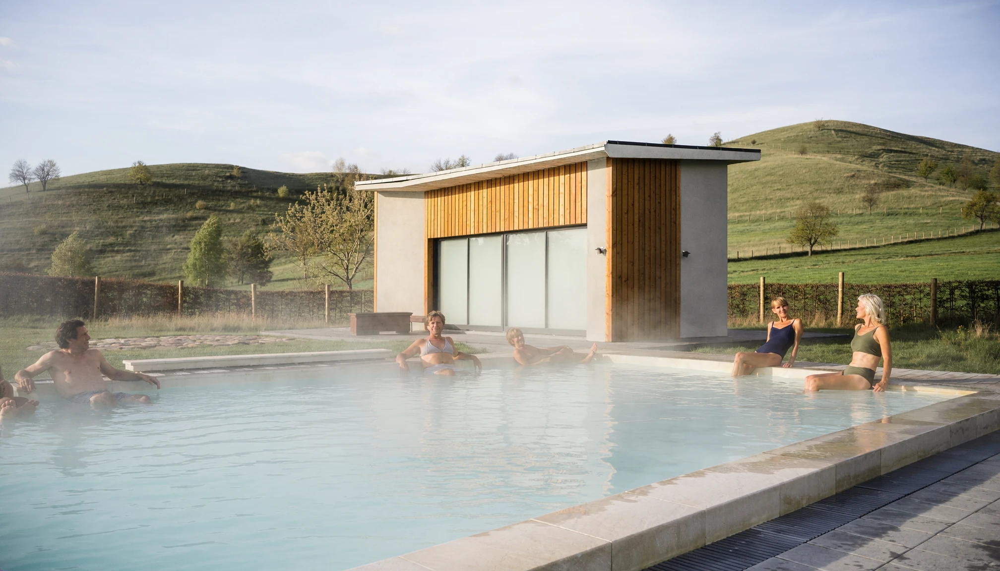
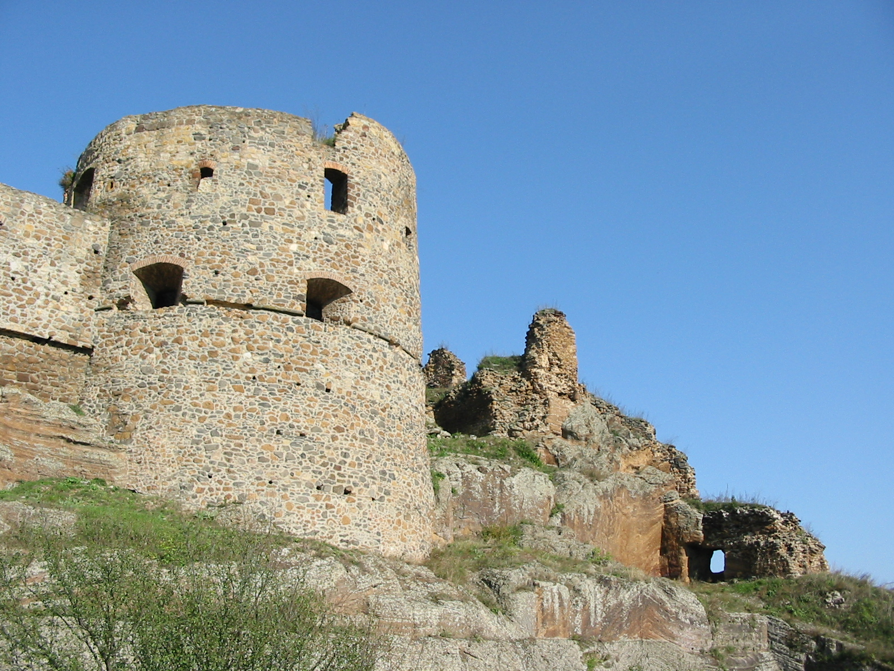
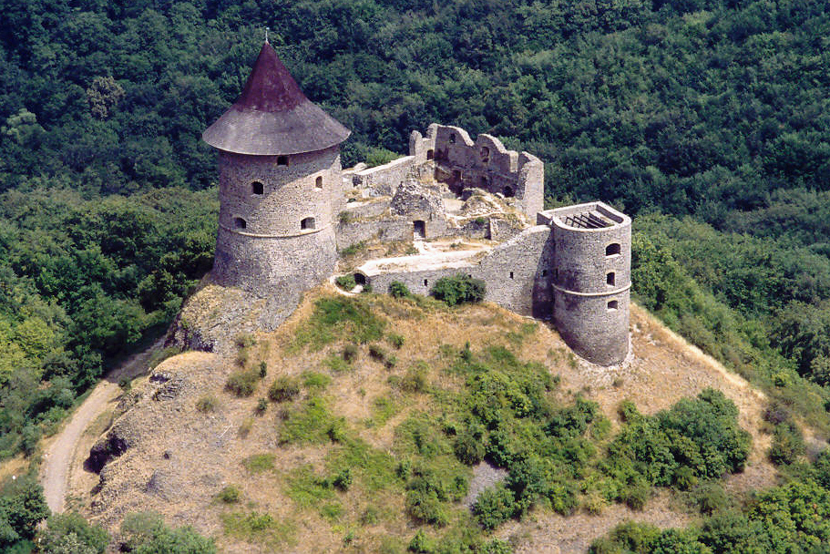
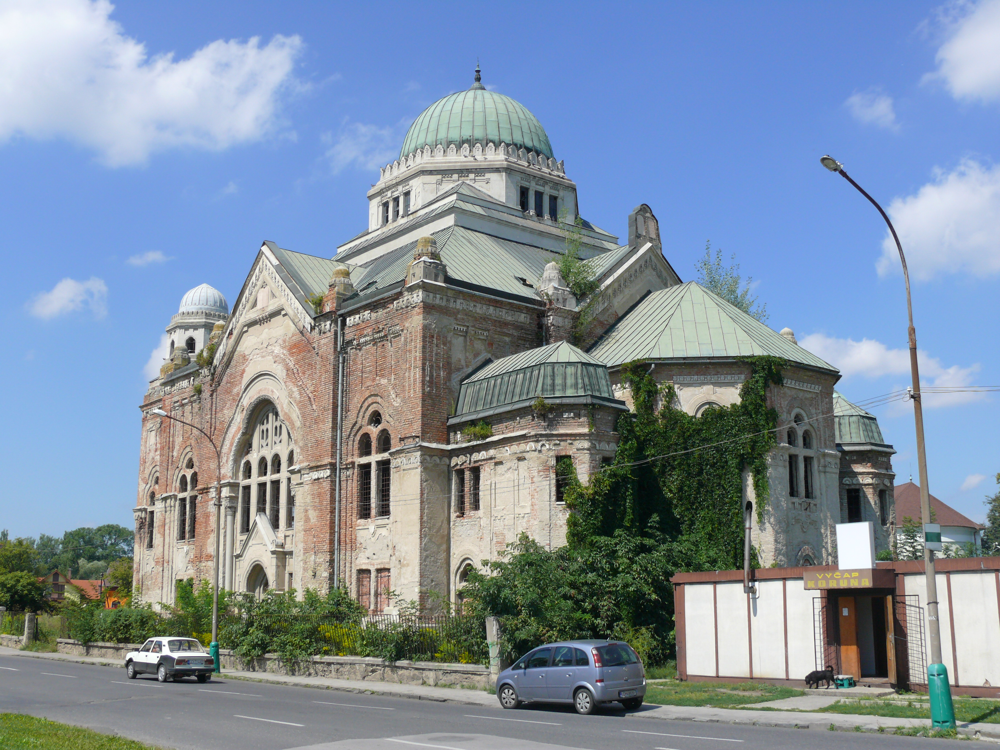
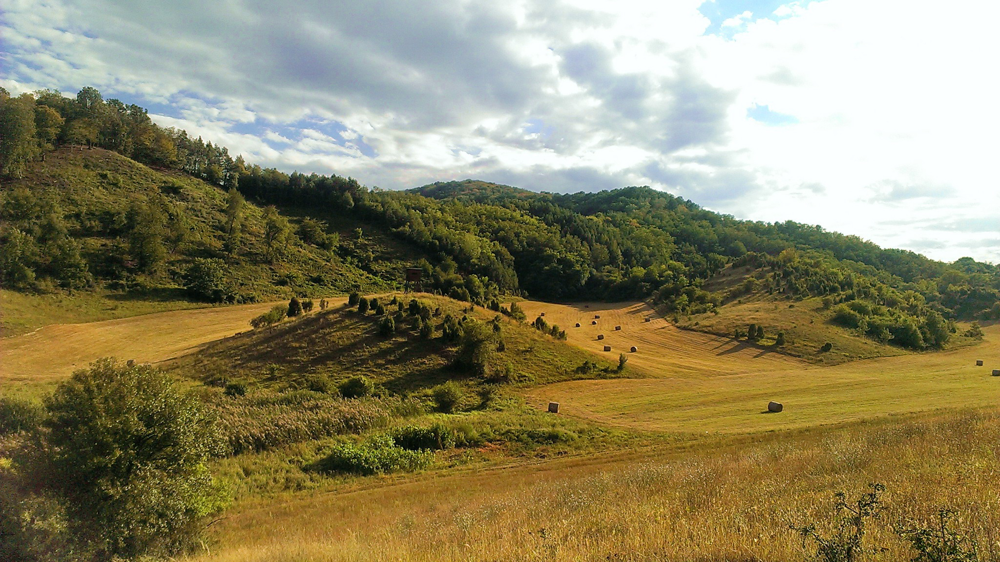

EMILI ÜDÜLŐPARK · EGYHÁZASGERGE · 4523 M² · NÓGRÁD VÁRMEGYE
20 millió alatt saját nyaraló.
Saját kert. Kocsibeálló. Saját szauna és jakuzzi. Tíz különböző design-kabin egy olyan üdülőparkban, ahonnan két ország programjai könnyen elérhetők.
A Mogyoró bevezető csomagára 19 900 000 Ft. A további házak egyedi csomagára lent, házanként szerepel. A vásárlási folyamat a szerződés feltételei szerint 10% befizetéssel indítható.
ELŐSZÖR A LEGFONTOSABB: HOL VAN?
Egyházasgerge, Nógrád vármegye. Ipolytarnóc és a szlovák határ mellett.
Budapest központjától az útvonalterv szerint 129 km / 113 perc. Az üdülőpark jó kiindulópont Észak-Nógrádhoz és Dél-Szlovákiához is: ősmaradványok, várak, termálfürdők és erdei túrák sorakoznak körülötte.
Az alábbi menetidők Egyházasgerge központjától számított autós útvonaltervek; a tényleges idő forgalomtól és útvonaltól függ.A TELJES EMILI ÜDÜLŐPARK
10 saját nyaraló egy 4523 m²-es parkban.
A parkos elrendezési változat 10 × 290 m² saját használatú kertrésszel és 1623 m² közös parkkal számol. Minden kabin külön kapuval kapcsolódik az út felé.


MIÉRT EZT VÁLASZD?
Mert nem csak egy kis házat veszel.
Saját helyed van
Nem hotelszoba és nem közös apartman: saját használatú kert, saját terasz, saját szauna és jakuzzi.
20 M Ft alatti belépési szint
A bevezető értékesítési konstrukció 20 M Ft alatti árszintre épül; a választott ház konkrét ára és műszaki tartalma az egyedi ajánlatban kerül rögzítésre.
Tíz ház, tíz karakter
Nem ugyanazt a dobozt festjük át. A formától a belsőépítészetig minden kabin saját személyiséget kap.
Két ország programjai
Magyar várak, palóc örökség, szlovák várak, termálfürdők és vulkáni túratájak egyetlen hétvégi bázis körül.
Lehet csendes vagy aktív
Ugyanott működik romantikus elvonulásként és családi vagy baráti programbázisként.
Korlátozott méretű park
Tíz kabinban gondolkodunk, nem több száz apartmanban. A lépték emberi és a saját kertek intimitása megőrizhető.
Később kiadható
A park megépülése után rövid távú bérlésre is készülünk. A bérlési előfoglalási lista már most kialakítás alatt van.
Nem kell mindig program
Ha semhová nem mennél, a saját jakuzzi, szauna, kert és terasz önmagában is teljes hétvégi program.
A FÜRDŐK NEM APRÓBETŰS PROGRAMOK
Három külön wellness-irány.

MAGYARORSZÁG · 63 KM / 72 PERC
Bükkszék – Salvus
Gyógyvizes fürdőnap a híres Salvus vízzel. Nyugodtabb, klasszikus termálprogram.
Fotó: Pasztilla / Attila Terbócs · CC BY-SA 4.0Útvonal
MAGYARORSZÁG · 91 KM / 105 PERC
Demjén – Cascade
Barlang- és élményfürdő, gyógyfürdő, esti fürdőzés. Ez már önmagában egész napos kirándulás.
Fotó: Random photos 1989 · CC0Útvonal
SZLOVÁKIA · 24 KM / 29 PERC
Rapovce – Novolandia
A legközelebbi szlovák termálprogram Losonc mellett. Jó választás akkor is, ha csak fél napot szánnál wellnessre.
Wellness-hangulatkép · nem a létesítmény dokumentumfotójaÚtvonalKÉT ORSZÁG EGYETLEN BÁZISRÓL
Szlovákia nem „plusz program” – a lokáció egyik fő előnye.

Fülek / Fiľakovo
Vár, vár- és várostörténeti múzeum, török kori emlékek. Egyházasgergétől az útvonalterv szerint 36 perc.
Fotó: Richard Rusnák (Rios) · public domain
Somoskő / Šomoška
Középkori vár, bazaltvízesés, kőtenger és könnyű tanösvény. A táj önmagában is különleges.
Fotó: Civertan Grafikai Stúdió · CC BY-SA 2.5 / CC BY 2.5
Losonc / Lučenec
Közeli szlovák városi program. A zsinagóga épülete és a városközpont egy termálfürdős nappal is összeköthető; a zsinagóga belső látogathatóságát indulás előtt ellenőrizni kell.
Fotó: Prskavka · CC BY-SA 3.0
Cerová vrchovina
Kihunyt vulkánok tája, erdők, bazaltformák és tanösvények. A Somoskő körüli túrák természetes folytatása.
Fotó: Vladimír Držík · CC BY 3.0TÍZ VALÓBAN KÜLÖNBÖZŐ HÁZ
Válaszd ki, melyik illik hozzád.
A látványtervek külön építészeti karaktereket mutatnak. A végleges kialakítást a szerződés és a kiviteli terv rögzíti.
EMILI DESIGN KABIN
Mogyoró
Az erdei mini lodgeKét eltolt nyeregtetős tömeg, nagy üvegfelület, természetes fa és fekete fém. Meleg, kuckós karakter; pároknak és csendes hétvégékhez.
Belső: Mély bordó textil, diószínű fa, rejtett fények, kompakt kandallóhangulat.
AKCIÓS ÁR19 900 000 Ft
Ezt a házat választom
Bruttó kabinalapterület: 13,13 m²10% induló befizetés: 1 990 000 Ft
A csomag tartalma: kabin + 290 m² saját használatú kertrész + 8 m² terasz + 2 nyitott parkoló + 2 személyes finn szauna + 4 m² szaunamodul + 3 személyes jacuzzi.
MÉRETEZETT ÉRTÉKESÍTÉSI ALAPRAJZ
Mogyoró · 13,13 m² bruttó
A Mogyoró értékesítési alaprajzán a külső méretek, a helyiségek, a 8 m²-es terasz és a külön 4 m²-es szaunamodul méretezve szerepel.
EMILI DESIGN KABIN
Ferenc
A letisztult modernEgyszerű, jól használható alapforma, aszimmetrikus tető, saroküveg és fedett terasz. Semmi öncélú forma: minden négyzetméter dolgozik.
Belső: Égetett agyagszín, törtfehér és tölgy; minimalista konyha, sok tároló, hotelminőségű fürdő.
TELJES CSOMAGÁR20 980 000 Ft
Ezt a házat választom
Bruttó kabinalapterület: 13,84 m²10% induló befizetés: 2 098 000 Ft
A csomag tartalma: kabin + 290 m² saját használatú kertrész + 8 m² terasz + 2 nyitott parkoló + 2 személyes finn szauna + 4 m² szaunamodul + 3 személyes jacuzzi.
MÉRETEZETT ÉRTÉKESÍTÉSI ALAPRAJZ
Ferenc · 13,84 m² bruttó
A Ferenc értékesítési alaprajzán a külső méretek, a helyiségek, a 8 m²-es terasz és a külön 4 m²-es szaunamodul méretezve szerepel.
EMILI DESIGN KABIN
Fenyő
Az üvegfalú A-frameMagas, meredek tető és teljes üvegű homlokzat. A belső tér vertikális, látványos és ünnepi; esti kivilágításban különösen erős.
Belső: Égetett narancs, natúr fenyő és grafit; galériás hangulat, nagy függőlámpák.
TELJES CSOMAGÁR22 250 000 Ft
Ezt a házat választom
Bruttó kabinalapterület: 15,50 m²10% induló befizetés: 2 225 000 Ft
A csomag tartalma: kabin + 290 m² saját használatú kertrész + 8 m² terasz + 2 nyitott parkoló + 2 személyes finn szauna + 4 m² szaunamodul + 3 személyes jacuzzi.
MÉRETEZETT ÉRTÉKESÍTÉSI ALAPRAJZ
Fenyő · 15,50 m² bruttó
A Fenyő értékesítési alaprajzán a külső méretek, a helyiségek, a 8 m²-es terasz és a külön 4 m²-es szaunamodul méretezve szerepel.
EMILI DESIGN KABIN
Kilátó
A kétszintes lombházKeskeny, függőleges épület lábakon, felső wellness-terasszal. Nem klasszikus faház, hanem kis erdei kilátó, ahonnan a táj a fő látványelem.
Belső: Sötét fa, bordó és bronz; panorámás háló, emeleti jakuzzi-terasz.
TELJES CSOMAGÁR22 520 000 Ft
Ezt a házat választom
Bruttó kabinalapterület: 15,85 m²10% induló befizetés: 2 252 000 Ft
A csomag tartalma: kabin + 290 m² saját használatú kertrész + 8 m² terasz + 2 nyitott parkoló + 2 személyes finn szauna + 4 m² szaunamodul + 3 személyes jacuzzi.
MÉRETEZETT ÉRTÉKESÍTÉSI ALAPRAJZ
Kilátó · 15,85 m² bruttó
A Kilátó értékesítési alaprajzán a külső méretek, a helyiségek, a 8 m²-es terasz és a külön 4 m²-es szaunamodul méretezve szerepel.
EMILI DESIGN KABIN
Szikla
A karakteres design-kabinSötét, szoborszerű tömeg, mélyen bevágott terasz és kő lábazat. Erős, fotogén forma azoknak, akik valami teljesen mást akarnak.
Belső: Rozsda, bazaltszürke, narancs és nyers fa; látványos tapétás fal és sötét fürdő.
TELJES CSOMAGÁR22 670 000 Ft
Ezt a házat választom
Bruttó kabinalapterület: 16,05 m²10% induló befizetés: 2 267 000 Ft
A csomag tartalma: kabin + 290 m² saját használatú kertrész + 8 m² terasz + 2 nyitott parkoló + 2 személyes finn szauna + 4 m² szaunamodul + 3 személyes jacuzzi.
MÉRETEZETT ÉRTÉKESÍTÉSI ALAPRAJZ
Szikla · 16,05 m² bruttó
A Szikla értékesítési alaprajzán a külső méretek, a helyiségek, a 8 m²-es terasz és a külön 4 m²-es szaunamodul méretezve szerepel.
EMILI DESIGN KABIN
Lomb
A nyugodt pavilonAlacsony, hosszú épület mély fedett terasszal és nagy tolóüvegekkel. Közvetlen kapcsolat a kerttel, könnyen használható, földszintes kialakítás.
Belső: Világos tölgy, olajzöld és bordó részletek; nyitott konyha, kényelmes ülőpad.
TELJES CSOMAGÁR22 940 000 Ft
Ezt a házat választom
Bruttó kabinalapterület: 16,40 m²10% induló befizetés: 2 294 000 Ft
A csomag tartalma: kabin + 290 m² saját használatú kertrész + 8 m² terasz + 2 nyitott parkoló + 2 személyes finn szauna + 4 m² szaunamodul + 3 személyes jacuzzi.
MÉRETEZETT ÉRTÉKESÍTÉSI ALAPRAJZ
Lomb · 16,40 m² bruttó
A Lomb értékesítési alaprajzán a külső méretek, a helyiségek, a 8 m²-es terasz és a külön 4 m²-es szaunamodul méretezve szerepel.
EMILI DESIGN KABIN
Rézerdő
A rézszínű erdei házAszimmetrikus tető, sötét fa és rézszínű fém részletek. Elegánsabb, visszafogottabb karakter, amely ősszel szinte beleolvad a tájba.
Belső: Réz, gesztenyebarna és mélyvörös; lamellás fal, hangulatvilágítás, elegáns fürdő.
TELJES CSOMAGÁR23 100 000 Ft
Ezt a házat választom
Bruttó kabinalapterület: 16,60 m²10% induló befizetés: 2 310 000 Ft
A csomag tartalma: kabin + 290 m² saját használatú kertrész + 8 m² terasz + 2 nyitott parkoló + 2 személyes finn szauna + 4 m² szaunamodul + 3 személyes jacuzzi.
MÉRETEZETT ÉRTÉKESÍTÉSI ALAPRAJZ
Rézerdő · 16,60 m² bruttó
A Rézerdő értékesítési alaprajzán a külső méretek, a helyiségek, a 8 m²-es terasz és a külön 4 m²-es szaunamodul méretezve szerepel.
EMILI DESIGN KABIN
Patak
A privát udvaros kabinL alakú ház, amely saját kis belső kertet fog közre. A jakuzzi és a pihenőterasz nem kifelé, hanem az intim udvarra néz.
Belső: Meleg agyagszín, homok és bordó; mediterrán hangulatú belső, mintás tapéta, fa mennyezet.
TELJES CSOMAGÁR23 330 000 Ft
Ezt a házat választom
Bruttó kabinalapterület: 16,90 m²10% induló befizetés: 2 333 000 Ft
A csomag tartalma: kabin + 290 m² saját használatú kertrész + 8 m² terasz + 2 nyitott parkoló + 2 személyes finn szauna + 4 m² szaunamodul + 3 személyes jacuzzi.
MÉRETEZETT ÉRTÉKESÍTÉSI ALAPRAJZ
Patak · 16,90 m² bruttó
A Patak értékesítési alaprajzán a külső méretek, a helyiségek, a 8 m²-es terasz és a külön 4 m²-es szaunamodul méretezve szerepel.
EMILI DESIGN KABIN
Gesztenye
A két nyeregtetős családi kabinKét kisebb nyeregtetős tömeg üvegezett összekötéssel. Külön zónák, mégis egyetlen kompakt nyaraló; családnak is jól használható.
Belső: Gesztenyefa, meleg bézs és borvörös; külön alvó- és nappalizó zóna.
TELJES CSOMAGÁR24 330 000 Ft
Ezt a házat választom
Bruttó kabinalapterület: 18,20 m²10% induló befizetés: 2 433 000 Ft
A csomag tartalma: kabin + 290 m² saját használatú kertrész + 8 m² terasz + 2 nyitott parkoló + 2 személyes finn szauna + 4 m² szaunamodul + 3 személyes jacuzzi.
MÉRETEZETT ÉRTÉKESÍTÉSI ALAPRAJZ
Gesztenye · 18,20 m² bruttó
A Gesztenye értékesítési alaprajzán a külső méretek, a helyiségek, a 8 m²-es terasz és a külön 4 m²-es szaunamodul méretezve szerepel.
EMILI DESIGN KABIN
Naplemente
A panorámára forduló házRészben kiemelt, előreugró üvegezett lakótér nagy terasszal. A ház lényege a kilátás és az esti fény; a leginkább „wow” karakter.
Belső: Narancs, karamell, törtfehér; puha textíliák, nagy üvegfal, naplemente felé fordított ülőhely.
TELJES CSOMAGÁR24 400 000 Ft
Ezt a házat választom
Bruttó kabinalapterület: 18,30 m²10% induló befizetés: 2 440 000 Ft
A csomag tartalma: kabin + 290 m² saját használatú kertrész + 8 m² terasz + 2 nyitott parkoló + 2 személyes finn szauna + 4 m² szaunamodul + 3 személyes jacuzzi.
MÉRETEZETT ÉRTÉKESÍTÉSI ALAPRAJZ
Naplemente · 18,30 m² bruttó
A Naplemente értékesítési alaprajzán a külső méretek, a helyiségek, a 8 m²-es terasz és a külön 4 m²-es szaunamodul méretezve szerepel.
TIMBERHAUS MŰSZAKI RENDSZER
Mi van a falak mögött?
A kabinok favázas rendszerűek. Az alábbi falrétegrend a Timberhaus dokumentált falrendszere; a házankénti végleges csomópontokat és szerkezeti méreteket a kiviteli terv rögzíti.
Homlokzati felület
Vékonyvakolat, fa, WPC vagy a ház karakteréhez illő egyedi homlokzati burkolat.
15 cm külső hőszigetelés
Grafitos EPS vagy kőzetgyapot rendszer a hőveszteség és a hőhidak csökkentésére.
Merevítő építőlemez
A faváz külső oldalán a fal statikai merevségéért és stabilitásáért.
Minősített faváz
Műszárított, szerkezeti célra gyártott, mérettartó, nagy teherbírású faváz.
Kőzetgyapot a faváz között
Nagy testsűrűségű hő- és hangszigetelés; nem éghető szigetelőanyag.
Párazáró réteg
A szerkezet páratechnikai védelmét és a páralecsapódás elleni működést biztosítja.
Belső szerelőréteg
Az elektromos és gyengeáramú vezetékek helye a párazáró réteg megsértése nélkül.
Belső gipszkarton rendszer
Festhető, tapétázható vagy egyedi burkolattal ellátható belső felület.
Tetőrendszer: a Timberhaus rendszerében a teherhordó tetőszerkezet, a korszerű hőszigetelés, a páraelvezetés és a minőségi fedés összehangolt rendszerként készül; a konkrét kabin tetőrétegrendjét a kiviteli dokumentáció rögzíti.
VÁSÁRLÁS ÉS FINANSZÍROZÁS
Már 10% befizetéssel elindítható.
10% induló befizetés
A kiválasztott ház szerződéses vásárlási folyamata 10% befizetéssel indítható. A házankénti konkrét induló összeg az árkártyán szerepel.
Dokumentált költségvetés
A ház, a műszaki tartalom, a telekrész, a kiegészítők és a kivitelezési ütem külön dokumentálható.
Banki finanszírozás
A bank az ügyfél jövedelmét, a fedezetet, az ingatlan jogi helyzetét, a terveket és a költségvetést vizsgálja. A hitel feltételeit mindig a választott pénzintézet állapítja meg.
Ütemezett folyósítás
Finanszírozott vásárlásnál a folyósítás a dokumentált műszaki készültséghez és szerződéses mérföldkövekhez illeszthető.
Fontos: a 10% az Emili vásárlási folyamat induló szerződéses befizetése, nem banki minimum önerőígéret. Banki hitel esetén az önerőt, fedezetet és folyósítási feltételeket a pénzintézet egyedileg állapítja meg.
NEM EGY PROGRAM. TÍZ KÉSZ HÉTVÉGE.
Programcsomagok különböző élethelyzetekre.
48 óra kettesben
2 éjÉrkezés után saját szauna és jakuzzi. Másnap Hollókő vagy Somoskő, este újra privát wellness. A harmadik reggel ráérős reggeli a teraszon.
Két ország, három vár
2–3 napSalgó vára, Somoskő/Šomoška és Fülek/Fiľakovo egyetlen tematikus hétvégében. Vulkáni táj, várak és határ menti történelem.
Ősvilág gyerekekkel
2 napIpolytarnóci Ősmaradványok, könnyű Šomoška tanösvény, majd játék és pihenés az üdülőparkban.
Termál hétvége
2–3 napEgy nap Bükkszék Salvus vizével, egy nap Demjén barlang- és élményfürdőjével. Közben saját szauna és jakuzzi otthon.
Szlovák wellness + város
1 napLosonc rövid városi programmal, majd Rapovce–Novolandia termálfürdő. Estére vissza a saját kabinba.
Bazalt és vulkánok
2 napSomoskő bazaltvízesése, kőtenger, Salgó és a Cerová vrchovina kihunyt vulkáni tájai.
Horgász hétvége
2 napKomravölgyi vagy Hasznosi víztározó a helyi horgászrend szerint; este forró jakuzzi és szauna.
Bringás bázis
2–4 napA környék dombvidéki útjai és erdei programjai. A park túrakerékpár-kölcsönzési lehetőséget is kínál.
Baráti aktív hétvége
2–3 napFoci, kosárlabda, teke, grill, quad-program, majd több külön kabinban saját esti pihenés.
Lassú pihenés
3 napSzécsény, Mátraverebély–Szentkút, Bükkszék és rövid séták. Kevés lépcső, saját kert, nyugodt tempó.
MAGYAR OLDAL
Közel van az ősvilág, a palóc örökség és a Medves.
Ipolytarnóc
11 km / 13 perc. Ősmaradványok, geológiai tanösvény és családi program.
Fotó: Darinko · public domainHollókő
UNESCO világörökségi Ófalu és vár – egy klasszikus egész napos kirándulás.
Fotó: Kfbs06 · CC BY-SA 3.0Salgó és Medves
Várrom, panoráma, erdei utak és vulkáni formák.
Fotó: Darinko · public domainAZ EMILI ÜDÜLŐPARK FUNKCIÓI
A parkban akkor is van mit csinálni, ha sehová nem indulsz.
közös medencefocikosárlabdatekejátszótérgrillquad-kölcsönzéstúrakerékpárbiopoolvízesésbarlangfürdővízi játszótér
A vízesés és az épített barlangfürdő a későbbi fejlesztési ütem része.
Válassz házat és kérd a konkrét ajánlatot.
A foglalási űrlapon megjelölheted a kabint, kérhetsz helyszínbejárást és részletes szerződéses ajánlatot.
Vásárlás / helyszínbejárásIratkozz fel a bérlési előfoglalásra.
A kabinok elkészülése után rövid távú bérléssel is számolunk. A naptár még nem nyílt meg.
Bérlési előfoglalásFontos: A kabinképek látványtervek; a méretezett értékesítési alaprajzok és a szerződéses műszaki dokumentáció az irányadó. A vízesés és az épített barlangfürdő későbbi fejlesztés. A menetidők tájékoztató útvonaltervező-adatok.
Fotók: Bükkszék – Pasztilla / Attila Terbócs, CC BY-SA 4.0; Demjén – Random photos 1989, CC0; Fülek – Richard Rusnák (Rios), public domain; Losonc – Prskavka, CC BY-SA 3.0; Cerová vrchovina – Vladimír Držík, CC BY 3.0; Hollókő – Kfbs06, CC BY-SA 3.0; Ipolytarnóc és Salgó – Darinko, public domain; Somoskő – Civertan Grafikai Stúdió, CC BY-SA / CC BY. A Rapovce–Novolandia kártya Fireflyjal készült wellness-hangulatképet használ, nem dokumentumfotót.